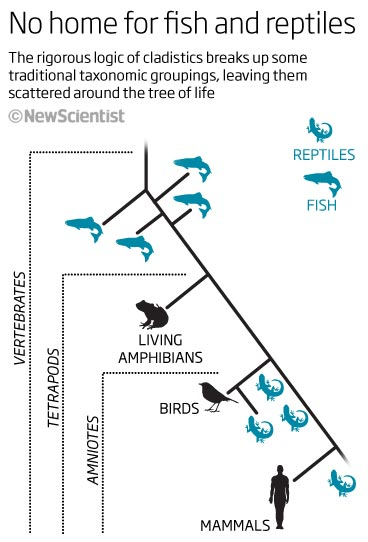

| Feature Article - June 2011 |
| by Do-While Jones |
A fool with a tool is still a fool.
The cover story in the May 21, 2011, issue of New Scientist is, "When Science Gets it Wrong, Nine basic things we thought we knew--but don't." One of those nine things is classification of reptiles and fish.
The article begins,
|
Vertebrates used to be so simple. They came in five common-sense categories: amphibians, birds, fish, mammals and reptiles. Birds were the winged and feathered ones, reptiles the scaly, cold-blooded ones. And so on. A place for everything and everything in its place. That was before cladistics, a more rational system of taxonomy initiated by the German entomologist Willi Hennig in the 1960s. It analyses shared characteristics and genetic relationships to group species according to their evolutionary ancestry. That sounds fair enough - but strict rationality, it turns out, plays havoc with those familiar groupings. 1 |
The premise of the article is that cladistics analysis is rational, even though it produces some irrational results. In general, the irrational results must be correct, and common sense must be wrong. In particular, reptiles and fish aren't related in any logical way.
|
But pity the poor reptiles. The traditional group Reptilia - things like lizards, crocodiles, snakes, tortoises plus many extinct groups - is not a true clade, because the common ancestor of all those animals also gave rise, at different points, to mammals and birds. According to cladistics, you can clump these three groups together in a mega-grouping, known as the amniotes, but you cannot hack off a single, consistent reptile branch (see diagram). Amphibians fare a little better, but only the living ones: frogs, toads, newts, salamanders and worm-like caecilians. Include the extinct ones, and you encounter the reptile problem on bigger scale: the relevant clade includes all tetrapods, the four-limbed vertebrates. And don't even start on fish. 2 |
 |
He realizes how silly this is. He ends the article by saying,
|
If you think this is cladistic correctness gone mad, you have a point. For everyday purposes, most biologists are happy to use traditional, common-sense classifications based on obvious characteristics. You won't ever hear them refer to "non-avian, non-mammalian amniotes" when "reptiles" would do. But the term is really a hangover from a less well-informed age. 3 |
Common sense, he thinks, is "really a hangover from a less well-informed age." He is a better-informed intellectual, free from the restriction of common sense.
How do they come up with such nonsense? It really isn't surprising if you know how cladistics works. Here it is straight from the horse's mouth. (The horse, in this case, is the University of California Museum of Paleontology.)
|
Synapomorphies are the basis for cladistics Cladistics is a particular method of hypothesizing relationships among organisms. Like other methods, it has its own set of assumptions, procedures, and limitations. Cladistics is now accepted as the best method available for phylogenetic analysis, for it provides an explicit and testable hypothesis of organismal relationships. The basic idea behind cladistics is that members of a group share a common evolutionary history, and are "closely related," more so to members of the same group than to other organisms. These groups are recognized by sharing unique features which were not present in distant ancestors. These shared derived characteristics are called synapomorphies. ... What assumptions do cladists make? There are three basic assumptions in cladistics: 1. Any group of organisms are related by descent from a common ancestor. 2. There is a bifurcating pattern of cladogenesis. 3. Change in characteristics occurs in lineages over time. The first assumption is a general assumption made for all evolutionary biology. It essentially means that life arose on earth only once, and therefore all organisms are related in some way or other. Because of this, we can take any collection of organisms and determine a meaningful pattern of relationships, provided we have the right kind of information. Again, the assumption states that all the diversity of life on earth has been produced through the reproduction of existing organisms. 4 |
The fundamental fatal flaw is that it is based on the evolutionary assumption. Since the evolutionary assumption is wrong, the results will be wrong. It's a classic case of "garbage in, garbage out." It all depends on the decisions you make. The museum presents a step-by-step method for creating a cladogram. Here are some key points:
|
HOW TO CONSTRUCT CLADOGRAMS ... 2. Determine the characters (features of the organisms) and examine each taxon to determine the character states (decide whether each taxon does or does not have each character). All taxa must be unique. ... 5. Work out conflicts that arise by some clearly stated method, usually parsimony (minimizing the number of conflicts). ... To accomplish the task of creating a good cladogram, you must use your judgement [sic]. Ask yourself the following questions and answer them carefully.
|
In other words, pick characteristics you think are unique and important. But, you will probably have trouble finding traits that are truly unique, so do the best you can (in your opinion) to pick the combination of traits that give you the results you want. If two entirely different groups have the same "unique" characteristic, you can always justify your choice by claiming (without proof) that the "unique" characteristic evolved independently in unrelated species.
If evolution really were true, that is, if all groups of organisms were related by descent from a common ancestor, cladistics would work pretty well. It would not produce strange groupings. It doesn't produce reasonable groups because the underlying assumption of evolution is wrong. All living things aren't related by descent from a common ancestor.
| Quick links to | |||
|---|---|---|---|
| Science Against Evolution Home Page |
Back issues of Disclosure (our newsletter) |
Web Site of the Month |
Topical Index |
Footnotes:
1
Lawton, New Scientist, 21 May, 2011, "Rewriting the textbooks: No such thing as reptiles", page 30, http://www.newscientist.com/article/mg21028132.500-rewriting-the-textbooks-no-such-thing-as-reptiles.html
2
ibid.
3
ibid.
4
http://www.ucmp.berkeley.edu/clad/clad1.html
5
http://www.ucmp.berkeley.edu/clad/clad2.html